A value that holds other values
Gregory S. DeLozier, PhD
length becomes a keyword.
[ and ] are now reserved for list literals
and indexing.
empty = [];
mixed = [1, "two", true];Elements do not need to share a type.
numbers = [10, 20, 30];
print(numbers[1]);Prints 20. An index is a position, not the
element.
if type(index) is bool or type(index) not in (int, float):
raise TypeError("List index must be an integer")
if type(index) is float and not index.is_integer():
raise TypeError("List index must be an integer")3.0 is valid. 3.5 and
true are not.
matrix = [[1, 2], [3, 4], [5, 6]];
print(matrix[1][0]);Prints 3. No special two-argument
form.
values = [3, 1, 4, 1, 5, 9];
total = 0;
i = 0;
while (i < length(values)) {
total = total + values[i];
i = i + 1;
}total ends at 23.
if ast["tag"] == "complex":
base, status = evaluate(ast["base"], environment)
if status is not None:
return base, status
index, status = evaluate(ast["index"], environment)
if status is not None:
return index, status
if type(base) is not list:
raise TypeError("Indexing requires a list")
return base[require_list_index(index, base)], Noneassignment_statement ::= <identifier> { index_suffix } "=" expressionSame grammar helper as reading. The difference is only in what the evaluator does with the result.
elif target["tag"] == "complex":
base, status = evaluate(target["base"], environment)
if status is not None:
return base, status
index, status = evaluate(target["index"], environment)
if status is not None:
return index, status
if type(base) is not list:
raise TypeError("Indexed assignment requires a list")
key = require_list_index(index, base)
destination = baseThe target is resolved before the right-hand value, for every kind of target.
a[exit(6)] = exit(999);Returns (6, "exit"), not (999, "exit").
original = [1, 2, 3];
alias = original;
alias[0] = 99;
print(original);Prints [99, 2, 3]. No new code made this
possible.

original = [7, 8, 9];
print(alias);Still prints [99, 2, 3].

print([1, 2] == [1, 2]);
print([true] == [1]);Prints true, then
false.
first = [1, 2];
second = [3, 4];
combined = first + second;
combined[0] = 99;
print(first);Prints [1, 2]. combined is a new
list.
print([1, "hi", true, [2, 3]]);Prints [1, "hi", true, [2, 3]].
Empty and mixed-type literals; element evaluation order; nested literals and chained indexing.
Every rejected index case: fractional, boolean, string, negative, out of range.
Mutation through an alias versus rebinding leaving the alias untouched; structural equality including the nested true != 1 case.
exit injected at every new position: a list element, an index base, an index, and an indexed assignment’s right-hand value.
When should assigning a list copy it, and when should it share the same value?
How can the scalar equality rule true != 1 affect the equality of two lists that look identical at a glance?
What state can change before an indexed assignment encounters exit, and what can only change after it?